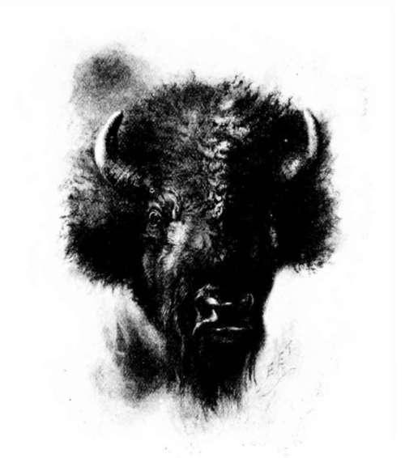

The Last Of The Buffalo
Description
This section is from the book "Hunting", by Archibald Rogers. Also available from Amazon: Hunting.
The Last Of The Buffalo
In the floor, on either side of my fireplace, lie two buffalo skulls. They are white and weathered, the horns cracked and bleached by the snows and frosts and the rains and heats of many winters and summers. Often, late at night, when the house is quiet, I sit before the fire, and muse and dream of the old days; and as I gaze at these relics of the past, they take life before my eyes. The matted brown hair again clothes the dry bone, and in the empty orbits the wild eyes gleam. Above me curves the blue arch; away on every hand stretches the yellow prairie, and scattered near and far are the dark forms of buffalo. They dot the rolling hills, quietly feeding like tame cattle, or lie at ease on the slopes, chewing the cud and half asleep. The yellow calves are close by their mothers; on little eminences the great bulls paw the dust, and mutter and moan, while those whose horns have grown one, two, and three winters are mingled with their elders.
Not less peaceful is the scene near some river-bank, when the herds come down to water. From the high prairie on every side they stream into the valley, stringing along in single file, each band following the deep trail worn in the parched soil by the tireless feet of generations of their kind. At a quick walk they swing along, their heads held low; the long beards of the bulls sweep the ground; the shuffling tread of many hoofs marks their passing, and above each long line rises a cloud of dust that sometimes obscures the westering sun.
Life, activity, excitement, mark another memory as vivid as these. From behind a near hill, mounted men ride out, and charge down toward the herd. For an instant the buffalo pause to stare, and then crowd together in a close throng, jostling and pushing each other, a confused mass of horns, hair, and hoofs. Heads down and tails in air, they rush away from their pursuers; and as they race along herd joins herd, till the black mass sweeping over the prairie numbers thousands. On its skirts hover the active, nimble horsemen, with twanging bowstrings and sharp arrows piercing many fat cows. The naked Indians cling to their naked horses as if the two were parts of one incomparable animal, and swing and yield to every motion of their steeds with the grace of perfect horsemanship. The ponies, as quick and skilful as the men, race up beside the fattest of the herd, swing off to avoid the charge of a maddened cow, and returning, dart close to the victim, whirling hither and yon, like swallows on the wing. And their riders, with the unconscious skill, grace, and power of matchless archery, are drawing their bows to the arrow's head, and driving the feathered shaft deep through the bodies of the buffalo. Returning on their tracks, they skin the dead, then load meat and robes on their horses, and with laughter and jest ride away.
After them, on the deserted prairie, come the wolves to tear at the carcasses. The rain and the snow wash the blood from the bones, and fade and bleach the hair. For a few months the skeleton holds together; then it falls down, and the fox and the badger pull about the whitening bones, and scatter them over the plain. In some such way came the bones of this cow and this bull of mine on the prairie where I found them, and picked them up to keep as mementoes of the past, to dream over, and in such revery to see again the swelling hosts which yesterday covered the plains, and to-day are but a dream.
So the buffalo passed into history. Once an inhabitant of this continent from the Arctic slope to Mexico and from Virginia to Oregon, and within the memory of men yet young roaming the plains in such numbers that it seemed that it could never be exterminated, it has now disappeared as utterly as has the bison from Europe. For it is probable that the existing herds of that practically extinct species, now carefully guarded in the forests of Grodno, even exceed in numbers the buffalo in the Yellowstone Park; while the wild bison in the Caucasus may be compared with the "wood" buffalo which survive in the Peace River district. In view of the former abundance of our buffalo, this parallel is curious and interesting.
The early explorers were constantly astonished by the multitudinous herds which they met with, the regularity of their movements, and the deep roads which they made in travelling from place to place. Many of the earlier references are to territory east of the Mississippi, but even within the last fifteen years buffalo were to be seen on the Western plains in numbers so great that an entirely sober and truthful account seems like fable. Describing the abundance of buffalo in a certain region, an Indian once said to me, in the expressive sign language of which all old frontiersmen have some knowledge, "The country was one robe."
Buffalo's Head.
Much has been written about their enormous abundance in the old days, but I have never read anything that I thought an exaggeration of their numbers as I have seen them. Only one who has actually spent months in travelling among them in those old days can credit the stories told about them. The trains of the Kansas Pacific Railroad used frequently to be detained by herds which were crossing the tracks in front of the engines; and in 1870, trains on which I was travelling were twice so held, in one case for three hours. When railroad travel first began on this road, the engineers tried the experiment of running through these passing herds; but after their engines had been thrown from the tracks they learned wisdom, and gave the buffalo the right of way. Two or three years later, in the country between the Platte and Republican Rivers, I saw a closely massed herd of buffalo so vast that I dare not hazard a guess as to its numbers; and in later years I travelled for weeks at a time, in northern Montana, without ever being out of sight of buffalo. These were not in close herds, except now and then when alarmed and running, but were usually scattered about, feeding, or lying down on the prairie at a little distance from one another, much as domestic cattle distribute themselves in a pasture or on the range. As far as we could see on every side of the line of march, and ahead, the hillsides were dotted with dark forms; and the field-glass revealed yet others on every side, stretched out in one continuous host to the most distant hills. Thus was gained a more just notion of their numbers than could be had in any other way; for the sight of this limitless territory occupied by these continuous herds was more impressive than the spectacle of a surging, terrified mass of fleeing buffalo, even though the numbers which passed rapidly before one's gaze in a short time were very great.
Continue to: